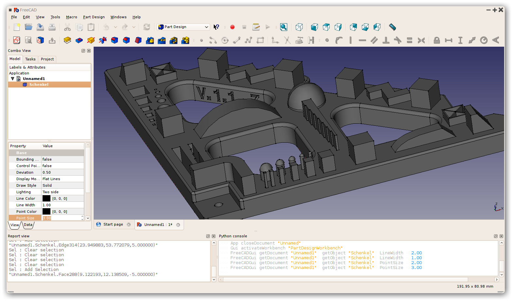

About FreeCAD/ro
{kind=link}

FreeCAD este un soft de modelare parametrică 3D și face parte din marea familie a software CAD . Dezvoltarea este în întregime Open Source Open Source (LGPL License)(licences GPL et LGPL). FreeCAD and este orientat spre inginerie mecanică mechanical engineering și proiectarea de produse product design, dar vizează de asemenea și alte domenii de activitate inginerească (ca arhitectura, construcțiile în general, navele, robotica, etc).
Caracteristicile instrumentelor FreeCAD sunt similare cu Catia, SolidWorks sau Solid Edge, și de aceea intră în categoria MCAD, PLM, CAx și CAE. Este un feature based parametric modeler cu o arhitectură software modulară care facilitează furnizarea de funcționalități suplimentare fără a modifica sistemul central.
Ca și multe alte modelatoare moderne 3D CAD modelers are multe componente 2D pentru a schița forme 2D sau pentru a extrage detaliile de proiectare de la modelul 3D pentru a crea desene de producție 2D, desen 2D direct.(like AutoCAD LT) nu este focalizat nici pe animație sau forma organice (ca de exemplu Maya, 3ds Max, Blender or Cinema 4D), în ciuda adaptabilității sale largi, FreeCAD poate fi mult mai util într-o paletă largă dea domenii decât în prezent.
FreeCAD utilizează din greu toate bibliotecile mari open source care există în domeniul Scientific Computing. Printre ele sunt OpenCascade, a powerful CAD kernel, Coin3D, o încarnare a Open Inventor, Qt, the world-famous UI framework, and Python, una dintre cele mai bune limbaje de scripting disponibile. FreeCAD în sine poate fi folosit ca o bibliotecă de alte programe.
FreeCAD este de asmenea plin de multi-platform, și rulează în mod curent fără probleme pe sistemele Windows și Linux / Mac OSX, având exact același aspect și funcționalitate pe toate platformele.
Pentru mai multe informații despre capabilitățile FreeCAD, aruncați o privire laFeature list, the latest release notes or the Getting started articles, or see more screenshots.
Despre proiectul FreeCAD
Proiectul FreeCAD a început tocmai din anul 2001, după cum se descrie pagina sa de istorie history .
FreeCAD este menținută și dezvoltată de o comunitate de dezvoltatori și utilizatori entuziaști (vezi pagina contributors). Ei lucrează pe FreeCAD în mod voluntar, în timpul lor liber. Ei nu pot garanta că FreeCAD va conține toți v-ați dori, dar de obicei ei vor face tot ce pot! Comunitatea se adună pe forumul FreeCAD, unde se discută majoritatea ideilor și deciziilor. Simțiți-vă liber să vă alăturați!
About the FPA
The FreeCAD project is also supported by a non-profit organization, the FreeCAD project association (FPA). The FPA is an independent body created by some FreeCAD veterans in 2021 to collect donations and other resources to support the project and its community, to help protect that community and allow it to continue developing in the best conditions, and to represent the project against other bodies such as companies and institutions.
- Getting started
- Installation: Download, Windows, Linux, Mac, Additional components, Docker, AppImage, Ubuntu Snap
- Basics: About FreeCAD, Interface, Mouse navigation, Selection methods, Object name, Preferences, Workbenches, Document structure, Properties, Help FreeCAD, Donate
- Help: Tutorials, Video tutorials
- Workbenches: Std Base, Assembly, BIM, CAM, Draft, FEM, Inspection, Material, Mesh, OpenSCAD, Part, PartDesign, Points, Reverse Engineering, Robot, Sketcher, Spreadsheet, Surface, TechDraw, Test Framework
- Hubs: User hub, Power users hub, Developer hub